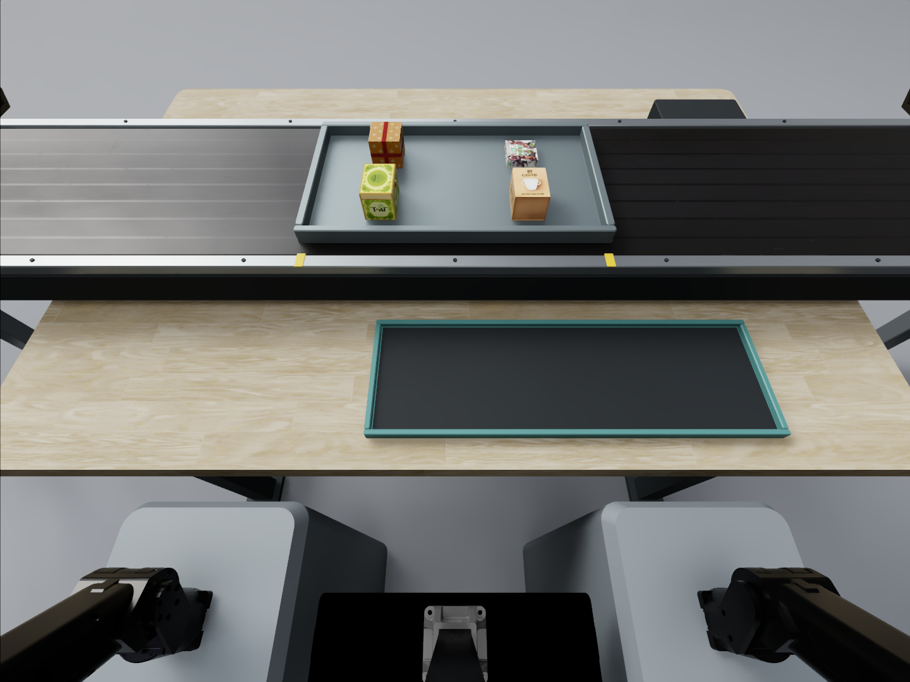
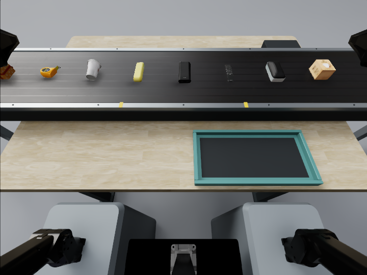
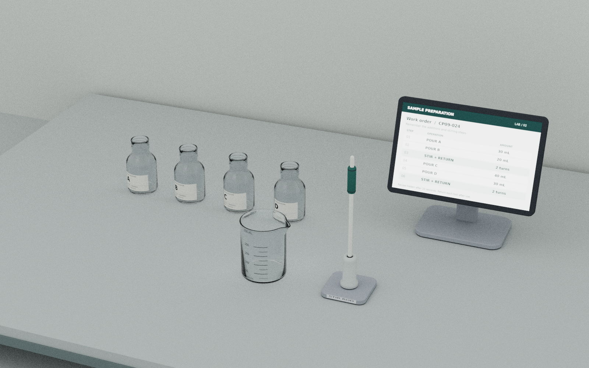

认知决定如何行动
历史身份、空间关系、任务规则和执行进度，决定此刻要操作哪个对象、到达什么目标，以及遵循哪些约束。
历史如何改变目标选择 →PhysCo: A Benchmark for Cognitive–Motor Coupling in Robotic Manipulation
理解目标、执行动作、确认效果，再决定下一步。PhysCo 通过认知、动作与耦合任务，研究机器人能否将记忆与规划转化为所需的物理效果，并在真实反馈中持续完成任务。
一个正确的目标，需要由物理动作实现。抓取、放置或接触出现偏差后，后续决策也应随之更新。PhysCo 将这种双向依赖作为任务设计的核心。
历史身份、空间关系、任务规则和执行进度，决定此刻要操作哪个对象、到达什么目标，以及遵循哪些约束。
历史如何改变目标选择 →是否抓到、是否放稳、读数是否达标、琴键是否真正触发，都需要实际证据。评测关注每个操作产生的物理效果。
从微调到松手稳定 →未完成的目标仍需处理，失效的前提需要复核，新的占用会改变布局。长程与动态任务要求这种状态一致性持续成立。
多阶段操作怎样衔接 →历史 · 规则 · 有效进度
对象 · 约束 · 操作时机
抓取 · 调节 · 连续接触
达标 · 偏差 · 未完成
以传送带复检分拣为例
记住参考款式后，机器人尝试抓取目标。选择一个执行结果，看看下一步应如何改变。
三类任务分别考察历史与规则的使用、物理执行的质量，以及两者在完整流程中的相互依赖。展开 Case，查看演示、任务过程和评测定义。
历史身份、增量订单、旋转布局、未知映射与路线记忆。
连续取件、限时响应、线性与旋转调整、接触描线。
分拣、装饰、配液、装箱与复奏中的效果驱动推进。
 3 段演示
3 段演示已经离开视野的物品，能否继续参与当前的目标选择？
物料分批经过工位。首批用于观察；之后每批含一件此前出现过的物品。托盘停稳后，机器人将这件重复物品放入提交盘，随后进入下一批。
| 设置 | Easy | Medium | Hard |
|---|---|---|---|
| 托盘批数 | 3 批 | 5 批 | 7 批 |
| 每批物品数 | 4 件 | 4 件 | 6 件 |
| 重复件来源 | 上一批 | 前 1～3 批 | 前 1～5 批 |
| 跨批记忆要求 | 记住最近一批 | 至少一次重复件不来自上一批 | 至少两次重复件来自前 3～5 批 |
| 提交次数 | 2 次 | 4 次 | 6 次 |
| 外观与操作 | 自然外观；停稳后简单抓取、放入提交盘 | 相同 | 相同 |
| 尺寸与传送速度 | 重复件尺寸不变；停稳后抓取；速度不作为难度变量 | 相同 | 相同 |
 1 段演示
1 段演示新增需求与实际完成量，能否在交错操作中始终保持一致？
机器人根据短暂显示的订单向指定容器配餐。杯壁遮挡已放入的食材；执行过程中可能追加新订单。机器人需要分别维护累计需求与已完成量，直到所有容器都满足订单。
| 设计项 | Easy | Medium | Hard |
|---|---|---|---|
| 有需求的容器 | 2 个 | 2 个 | 3 个 |
| 初始订单 | 2 张，共 4 件 | 2 张，共 4 件 | 2 张，共 4 件 |
| 执行中新单 | 无 | 1 张，增加 1 件 | 2 张，分别增加 2 件、1 件 |
| 总投料次数 | 4 次 | 5 次 | 7 次 |
| 主要难点 | 记住初始订单与已完成进度 | 旧需求未完成时累积追加需求 | 维护三个容器的需求与进度；给已部分完成的容器追加同类食材 |
| 优先级／强制切换 | 无 | 无 | 无 |
 3 段演示
3 段演示隐藏的颜色—位置关系，能否随坐标变化被正确保持？
四格托盘短暂显示颜色布局，随后各格恢复相同外观并发生旋转。机器人持续观察旋转过程，待托盘停稳后，将四种颜色方块放回对应格位。
| 设置 | Easy | Medium | Hard |
|---|---|---|---|
| 转盘数量 | 1 个 | 1 个 | 1 个 |
| 格位与颜色数量 | 4 格、4 种颜色 | 相同 | 相同 |
| 旋转过程 | 1～2 段慢速、同方向旋转 | 3～4 段旋转，包含顺逆时针切换 | 5～6 段旋转，多次换向，速度更快 |
| 最终放置数量 | 4 个 | 4 个 | 4 个 |
| 方块尺寸与格位容差 | 统一设置 | 相同 | 相同 |
| 操作方式 | 转盘停止并保持静止后抓取、放置 | 相同 | 相同 |
 3 段演示
3 段演示通过实际交互获得的规则，能否被保留并用于后续规划？
无标识按钮控制载物滑台的移动方向。机器人先通过按压、释放和观察辨识按钮作用，再在滑台复位后利用学到的映射，到达指定目标位置。
| 设置 | Easy | Medium | Hard |
|---|---|---|---|
| 运动空间 | 一维直线轨道 | 3×3 二维网格 | 4×4 二维网格 |
| 未知控制关系 | 2 个按钮对应左右 | 4 个按钮对应四个方向 | 4 个按钮对应四个方向 |
| 正式最短路径长度 | 1–3 步 | 2–3 步 | 4–6 步 |
| 主要区别 | 发现简单映射并复用 | 学会二维映射，组合不同方向 | 在更长路径中持续正确使用映射 |
| 映射中途改变 | 不改变 | 不改变 | 不改变 |
 3 段演示
3 段演示能否记住目标经历的路线，而不只记住它最后在哪里？
蓝色工件被保护罩遮住后，随载台在固定工位之间换位。机器人需要追踪目标并记住完整路线，随后取出工件，按初始工位及后续到访顺序逐站回放。
| 设置 | Easy | Medium | Hard |
|---|---|---|---|
| 观察工位／提交垫数 | 4 | 4 | 5 |
| 总交换次数 | 3 | 5 | 7 |
| 目标实际移动次数 | 3 | 4 | 5 |
| 不涉及目标的交换 | 0 | 1 | 2 |
| 回访旧工位 | 无 | 至少一次 | 至少两次 |
| 回放放置次数（含初始工位） | 4 | 5 | 6 |
 3 段演示
3 段演示连续来件时，机器人能否把一整批交互及时、可靠地完成？
传送带以固定间距持续送来快递盒。机器人须在每件离开可抓区域前取下，并在总时限内将全部快递盒稳定放入侧面的收集盘。
| 设置 | Easy | Medium | Hard |
|---|---|---|---|
| 带速 | 低速匀速 | 较高速匀速 | 与 Medium 相同 |
| 目标数量 | N 件 | N 件 | M 件，M>N |
| 主要压力 | 基础动态响应与完整抓放 | 更短抓取窗口、更密集到达 | 较高速度下持续稳定执行 |
| 盒体、间距、观察段、抓取区域、收集盘 | 统一 | 相同 | 相同 |
 1 段演示
1 段演示每次时限内的响应，能否成为一次完整、有效的物理交互？
三个按钮轮流给出亮灯提示。机器人按下当前目标，达到有效触发条件后及时释放，再响应下一次提示。连续重复同一按钮也需要新的按压—释放周期。
| 参数 | Easy | Medium | Hard |
|---|---|---|---|
| 按钮数量 | 3 个 | 3 个 | 3 个 |
| 每条任务提示次数 | 10 次 | 10 次 | 10 次 |
| 亮灯至有效按下的时限 | 5 秒 | 4 秒 | 3.2 秒 |
| 有效按下后的释放时限 | 1 秒 | 1 秒 | 1 秒 |
| 释放后至下一次亮灯的间隔 | 0.3 秒 | 0.3 秒 | 0.3 秒 |
| 按钮尺寸、位置、按压行程 | 保持一致 | 保持一致 | 保持一致 |
 3 段演示
3 段演示从刻度读数到线性动作，能否实现准确停止和松手后的稳定？
机器人读取滑动变阻器刻度，移动绝缘操作柄到指定阻值。允许反复抓持和双向微调，最终松手撤离，并在允许误差内保持一秒。
| 设置 | Easy | Medium | Hard |
|---|---|---|---|
| 目标位置 | 有数字的主刻度 | 无数字的小刻度 | 最小刻度之间，需插值 |
| 初始 → 目标示例 | 15 → 30 Ω | 18 → 33 Ω | 18.25 → 33.25 Ω |
| 目标数 | 1 | 1 | 1 |
| 统一工作容差（暂定） | ±0.2 Ω | ±0.2 Ω | ±0.2 Ω |
 3 段演示
3 段演示角度定位与刻度插值，能否在同一物理容差下稳定完成？
机器人观察调压器的旋钮指针和刻度，旋转到指定电压。允许重抓及反向微调，最终撤离并稳定保持一秒。目标可能位于主刻度、小刻度或二者之间。
| 设置 | Easy | Medium | Hard |
|---|---|---|---|
| 目标位置 | 有数字的主刻度 | 无数字的小刻度 | 最小刻度之间，需插值 |
| 初始 → 目标示例 | 80 → 120 V | 95 → 135 V | 92 → 132 V |
| 目标数 | 1 | 1 | 1 |
| 统一工作容差（暂定） | ±1 V | ±1 V | ±1 V |
 3 段演示
3 段演示路径更弯时，能否保持真实接触并沿参考几何连续运动？
机器人从笔托取出大头笔，调整到书写姿态，在固定画板上顺序描过参考线。墨迹由真实接触位置产生，悬空不出墨，断触不会自动补线。
| 设置 | Easy | Medium | Hard |
|---|---|---|---|
| 参考形状 | 直线，零转弯 | S 形，2 个半波 | 多弯曲线，4 个半波 |
| 最小曲率半径 | 无穷大（曲率为零） | 约 54 mm | 约 25 mm |
| 路径总长度 | 350 mm | 350 mm | 350 mm |
| 笔尖直径／参考线宽 | 5 mm／约 2.5 mm | 相同 | 相同 |
| 中心线几何容差 | 两侧各 3 mm | 相同 | 相同 |
| 主要难点 | 基本直线跟踪 | 连续改变转向 | 更密集、更小半径的转向 |

场景预览历史选件与动态执行，能否通过真实入盘反馈保持同步？
参考商品随托盘经过观察区，离开全部相机视野后开始分拣。机器人记住参考款式，从持续经过的商品中各收取一件同款新实体。漏抓可在规定循环次数内等待回流。

| 设置 | Easy | Medium | Hard |
|---|---|---|---|
| 参考商品款式数 | 3 种 | 4 种 | 5 种 |
| 后续商品总数（不含参考组，回流不重复计数） | 9 件 | 12 件 | 15 件 |
| 需要收取的目标 | 每款 1 件，共 3 件 | 每款 1 件，共 4 件 | 每款 1 件，共 5 件 |
| 分拣阶段带速 | 低速匀速 | 中速匀速 | 较高速匀速 |
记忆目标、动态放置和多阶段操作，能否围绕真实物理状态连成闭环？
机器人观察三秒蛋糕装饰样例，记住四种马卡龙的位置。示范消失后，在持续旋转的蛋糕上复现布局。更高档位包含开配料盒、按启动、按停止、等待停稳和盖上保护罩。
| 设置 | Easy | Medium | Hard |
|---|---|---|---|
| 需记忆并放置的马卡龙 | 4 种，各 1 件 | 4 种，各 1 件 | 4 种，各 1 件 |
| 转盘速度 | 统一 20°/s | 统一 20°/s | 统一 20°/s |
| 动作链（难度递增） | 盒盖已开，转盘自动启动；抓取并随转盘放置 ×4；无按钮盒 | 左臂开盒 → 右臂按启动 → 左臂完成四件旋转装饰 | Medium 全流程 → 右臂按停止 → 等待停稳 → 右臂提罩、搬运、落罩并松手 |
| 放置区域与统一预算 | 4 个相同白巧克力圈全部使用，不提示颜色对应；装饰最多 4 圈，动作预算 135 秒（不含示范） | 相同 | 相同 |

场景预览工单可见时，能否依据实际加液、搅拌与归位效果正确推进阶段？
完整配方始终显示在桌面终端。机器人按原料顺序和加液量自由倾倒，并在指定阶段抓取搅拌棒、搅拌、归位，然后继续配液。四只原料瓶已由工作人员备料并开盖。
| 设置 | Easy | Medium | Hard |
|---|---|---|---|
| 配液步骤 | 2 次加液，2 种原料 | 3 次加液，3 种原料 | 4 次加液，4 种原料 |
| 搅拌安排（原子动作增加） | 不搅拌 | 全部加液后搅拌 1 次并归位 | 第 2 次与第 4 次加液后各搅拌 1 次，每次均归位 |
| 每步添加量容差 | 统一暂设 ±5 mL；试运行参数，待液体标定 | 相同，不额外收紧 | 相同，不额外收紧 |
| 剂量范围、启动观察与场景 | 20/30/40 mL；启动观察 2 秒；配方全程可见；容器、刻度、相机及布局扰动范围统一 | 相同 | 相同 |
真实占用与空间干涉，能否及时改变接下来的摆放计划？
机器人将餐盒、点心盒和直立饮料瓶装入带盖野餐篮。箱内没有固定槽位，机器人自主安排位置与顺序；允许取出多件重新摆放，最终使所有物品入篮并正常关盖。
本任务的视频与场景图待补充。
| 设置 | Easy | Medium | Hard |
|---|---|---|---|
| 物品数量 | 3 件 | 4 件 | 5 件 |
| 摆放余量 | 宽松，多种布局可行 | 较紧，需要安排朝向与位置 | 紧凑，小偏移可能阻塞后续放置 |
| 摆放规则 | 单层，饮料瓶直立 | 相同 | 相同 |
| 调整与暂存 | 允许取出多件后重新摆放 | 相同 | 相同 |
记住的音符序列，能否与左右臂分工和实际触键事件保持一致？
机器人抓稳敲击棒，观察按顺序亮起的目标琴键并记住短句。示范结束后，目标提示撤去，机器人使用单臂或双臂按顺序复奏；只有棒头真实下压到阈值才产生触键反馈。
| 设置 | Easy | Medium | Hard |
|---|---|---|---|
| 候选目标白键 | 中央 7 个 | 左右两组，共 14 个 | 左端、中央、右端，共 21 个 |
| 敲击棒 | 单臂单棒 | 双臂双棒 | 双臂双棒 |
| 序列长度 | 8 次敲击 | 8 次敲击 | 12 次敲击 |
| 目标区域总跨度 | 14.1 cm | 42.3 cm | 65.8 cm |
| 演示与执行周期 | 2 秒/次 | 2 秒/次 | 2 秒/次 |
| 主要难点 | 局部顺序记忆与单棒精确触键 | 双臂分区和左右交接 | 更长记忆、全琴跨度与同臂远近切换 |
评测设计面向两类系统。它们共享任务目标与环境侧完成条件，并分别记录观察权限、动作接口、训练条件和时间预算。
模型根据观察与历史生成工具调用，通过固定、非学习式末端执行接口操作机器人。关注目标选择、工具使用、反馈解释与任务推进。
学习式策略从声明的观察与指令输入生成动作或动作块。关注完整任务行为，以及历史、物理约束和执行反馈在连续控制中的作用。
由环境侧判据确认完成。两条路径的接口和训练条件分别披露；耦合要求描述的是任务依赖，不要求模型显式拆成认知与动作模块。
最终物理状态满足任务目标及约束。
当前仍成立的阶段完成条件与前置依赖。
位置、角度、剂量或接触轨迹的任务特定误差。
交互吞吐、端到端时延及窗口错失。
偏差后的额外操作、时间和资源消耗。
动态场景需记录环境是否在模型推理期间继续推进。持续时钟与暂停推理条件分别报告，有效交互频率与控制器内部步频分别计算。
可替换接口的系统可使用认知侧或执行侧的 oracle 对照；其他系统可采用可实施的观察、反馈干预。按实际证据区分目标、动作和进度错误。
本页展示任务定义、演示与评测设计。具体运行配置和未标定阈值需固定后开展比较；当前不展示模型评测成绩。
阅读研究框架，查看完整任务定义，或将展示内容与演示素材保存到本地。
技术报告 v0.1 介绍认知—动作耦合的问题定义与评测设计。报告包含早期任务示例，当前任务以本展示页为准。
阅读技术报告 ↗包含场景、能力、执行流程、难度设置、完成条件及指标，可作为独立的任务阅读材料。
下载任务说明 ↓结构化任务数据 · JSON32 段视频、3 张场景图与对应任务关联。展开任务即可播放，也可通过素材索引逐项访问文件。
查看素材索引 ↓